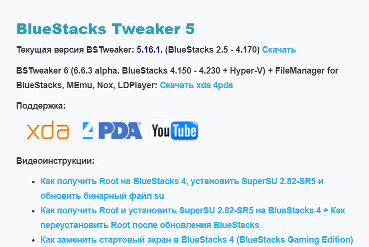
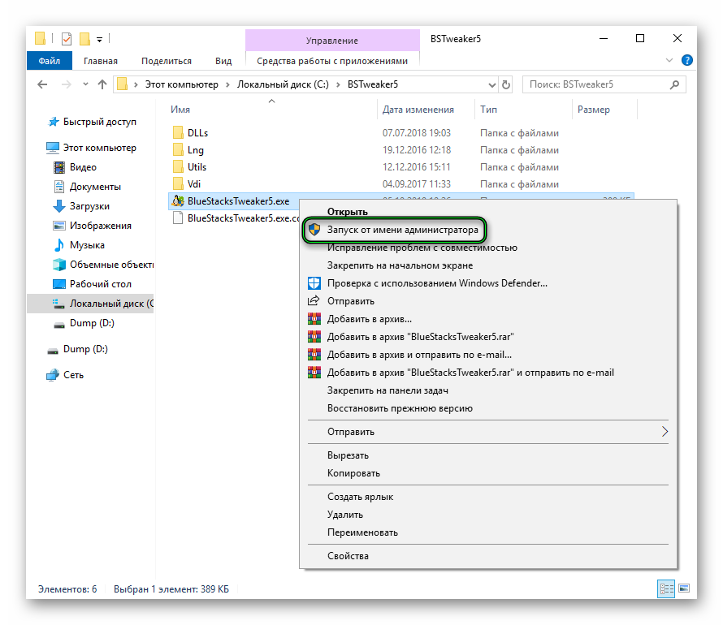
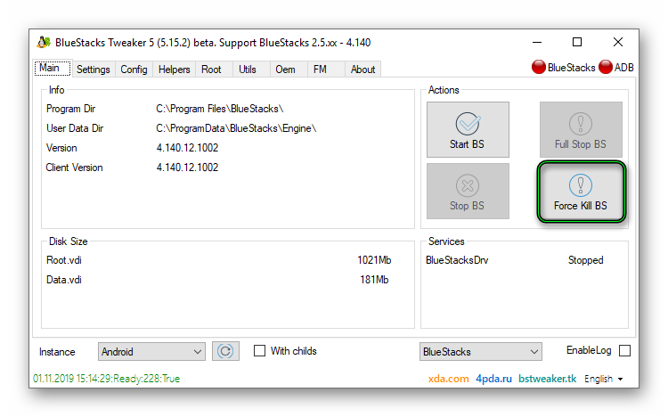
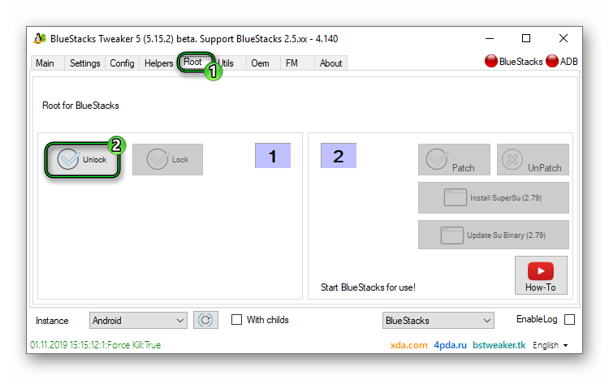
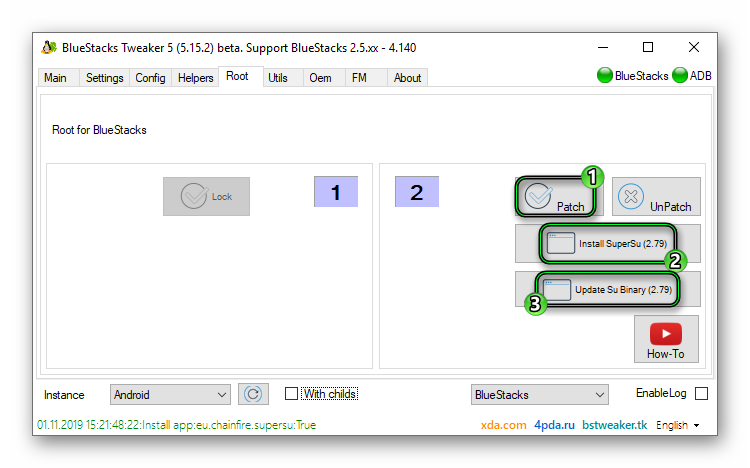

Как включить Root-права в BlueStacks
BlueStacks — отличный способ перенести мобильные приложения на персональный компьютер: начиная с игр, заканчивая техническими программами для работы. Так же, как и в операционной системе Android, весь потенциал работы эмулятора устройства раскрывается только с получением так называемых рут-прав. О том, как включать эти полезные настройки — читайте в нашем новом подробном материале.
| Для чего нужны root-права в Bluestacks↓ | Как получить root-права в Bluestacks↓ |
Зачем могут потребоваться root-права?
Многие пользователи Блюстакс склоняются к тому, чтобы включить режим root-доступа, то есть режим суперпользователя. На это есть несколько причин. Прежде всего, рутинг даёт владельцу устройства полный контроль над эмулятором: становится возможной наладка программ на своё усмотрение. По умолчанию разработчик ограничивает пользователей в действиях, чтобы избежать поломок софта и устройства — права суперпользователя буквально отключают эти барьеры.
{kind=link}
Кроме того, без рутинга невозможно установить множество популярных Android-приложений, а также нельзя оптимизировать работу программ при запуске в эмуляторе. Некоторый софт, например, Titanium BackUp (утилита для переноса данных между устройствами), не может работать на дефолтном блюстакс. Расширенные настройки позволяют пользователю отключать рекламу и ненужные процессы, которые ухудшают быстродействие устройства.
Особенность BlueStacks — отсутствие обычного тумблера в настройках для включения root-прав. Политика создателей эмулятора довольно незамысловата: таким образом программисты пытаются бороться с пиратством. Поскольку root-режим позволяет устанавливать взломанные платные программы, то открыть доступ становится непростой задачей. Тем не менее существует несколько хороших инструкций по установке расширенных прав, которые будут понятны любому пользователю. Представленный способ подходит как для новой версии приложения, так и для более старых (например, BlueStacks 3).
Инструкция по получению прав
Для предстоящей процедуры нам понадобится специальная утилита BSTweaker — полезный инструмент для глубокой настройки эмулятора. Все опции программы можно изучить отдельно (их немало и все они могут пригодится в профессиональной работе с Android-приложениями) — в нашем деле потребуется только одна функция.
Важно! Читайте весь туториал по порядку и выполняйте каждый пункт отдельно, иначе ошибок не избежать.
1. Скачать BSTweaker можно на проверенном сайте от разработчика: https://bstweaker.tk/ru/. В панели загрузок в вашем браузере появится загружающийся архив. Откройте его и извлеките содержимое архива в отдельную папку.

{kind=link}
2. Далее вам следует запустить файл BlueStacksTweaker5.exe. Обязательно делайте это от имени администратора — соответствующий пункт можно найти в меню при нажатии правой кнопки мыши по иконке приложения (см. скриншот). Иначе вы столкнётесь с ошибкой при включении рут-прав.
3. При получении root-прав BlueStacks должен быть полностью выключен. В открывшемся окне утилиты, которую мы только что скачали, выполните действие Force Kill BS во вкладке Main (Главная), как на изображении ниже. Так вы прекратите все процессы, которые совершает эмулятор.
4. Переходим к самому главному. Во вкладке Root находим кнопку Unlock (разблокировать). Ждём, пока завершится установка.
5. Теперь нам нужно запустить BlueStacks
6. Параллельно в программе BlueStacksTweaker в той же вкладке Root выбираем Patch, Install SuperSu и Update Su Binary.
7. Снова переходим в эмулятор и включаем программу SuperSu, которая появилась на главном экране. В самом приложении выбираем пункт «Новый пользователь».
8. Отныне вы обладаете рут-правами в BlueStacks!
{kind=link}
{kind=link}
{kind=link}
{kind=link}
{kind=link}
Совет: Чтобы проверить, доступны ли теперь права сверх пользователи, вы можете скачать специальное бесплатное приложение Root Checker, которое можно найти в Google Play.
Замечания:
— Если у вас устройство с операционной системой MacOS, то установить root-права вы не сможете. Виной всему внутренние ограничения от разработчиков Apple.
— При установке новых версий BlueStacks есть высокая вероятность потери прав сверх пользователя. Чтобы этого избежать, стоит отключить автоматическое обновление эмулятора.
Сделать это можно следующим образом:
1. В BlueStacks Tweaker откройте вкладку Help.
2. Во второй колонке найдите строку Disable Autoupdater (Отключить авто обновление).
3. Больше внезапное исчезновение рут-прав не представляет для вас угрозы.
Предупреждение
Некоторые любители предлагают клиенты Блюстакс сразу же со встроенным доступом к rooting-настройкам. Эти версии эмулятора с модификациями — неплохой способ сократить время получения прав сверх пользователя. Однако мы не рекомендуем скачивать подобные программы, поскольку они могут содержать вредоносный код: скрытую рекламу или вирусы.
Другой способ установки
В некоторых случаях инструмент SuperSU не устанавливается автоматически с помощью Tweaker, поэтому вас придётся скачать его в Google Play. Достаточно найти программу в поиске — она бесплатна для загрузки.
{kind=link}
Как раз искал как подключить рут-права, спасибо
Очень подробное и понятное объяснение, спасибо.
Теперь я знаю как включить рут права, спасибо!
Мда… Так сделали бы инструкцию к BSTweaker 6. Там совсем другой интерфейс
Так чел и что делай просто все также как в инструкции это легко там про интерфейс другой и все я же смог сделать
спасибоооо попробую напишу
А что делать если У МЕНЯ BLUESTACK TWEAKER 6?
принцип действий тот же
Там уже для BlueStacks Tweaker 6, а на сайте только 4 версия 5 бета. Где вы берете 6ю версию. Вообщем не работает ни один вариант. Все перепробовал
может на тройке попробовать
У меня стоит эмулятор Memu play. В нем рут-доступ уже есть.
А как рут-права потом удалить?